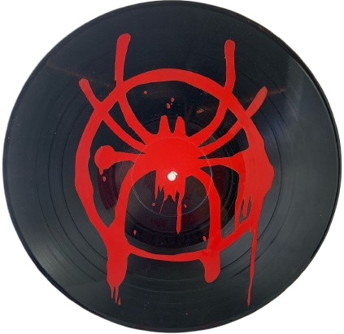

🕸️ Selamat Datang
Website ini merupakan media pendukung untuk menampilkan hasil Ujian Praktik Terintegrasi. Konten utama pada website ini adalah video broadcasting pembelajaran yang berisi penyampaian teks argumentasi secara lisan.
📚 Tentang Website
Website ini merupakan website portofolio digital yang berisi hasil karya dan pembelajaran saya selama mengikuti Ujian Praktik Terintegrasi.
🎯 Tujuan Pembuatan
Tujuan pembuatan website ini adalah untuk menampilkan karya yang telah saya buat serta melatih kemampuan saya dalam membuat website sederhana menggunakan HTML.
💡 Topik Argumentasi
Topik yang akan saya bahas adalah dampak nyata yang akan didapatkan setelah melakukan Intership Curriculum ke D'Kandang Amazing Farm. Sebelum melakukan kegiatan IC, saya melihat banyak permasalahan terutama dalam sektor ekonomi dan kesejahteraan yang ada di Indonesia. Saya tertarik untuk menganalisis dampak nyata dari program magang yang dilakukan oleh sekumpulan anak SMP dalam kehidupan dirinya dan bangsa di masa sekarang maupun di masa depan.
🚀 Harapan
Melihat permasalahan sulitnya mencari kerja di Indonesia, maka saya berharap penonton bisa termotivasi untuk ikut mempersiapkan diri sejak remaja sebelum masuk ke dunia kerja. saya harap penonton mampu meningkatkan kemampuan, pengalaman, dan kesediaan serta mulai membangun portofolio diri.
💭 Refleksi, Pesan dan Kesan
"Dari ujian praktek, saya belajar bahwa tidak segala hal bisa dinilai hanya dari angka di kertas tapi juga dari sikap pekerja keras, bertanggung jawab,
dan menejemen waktu. saya juga belajar bahwa keahlian dan kesenangan seseorang tidak hanya ada di pelajaran eksak yang menggunakan ilmu pasti saja namun juga di bidang yang menggunakan otak untuk kreativitas, ide dan keterampilan tangan.
Dan selama duduk di bangku kelas IX saya belajar bahwa segala sesuatu ada waktunya, ada waktu main dan ada waktu belajar, dari situ saya belajar untuk mengelola waktu, stress, dan keseimbangan hidup antara nilai dan kesenangan pribadi. Saya merasa di kelas IX ada sangat banyak ujian yang dilaksanakan, karenanya saya lebih termotivasi untuk belajar lebih tekun."
⚡ Spidey Stats / Skills


🎧 SPIDER-VERSE SOUNDTRACK DECK 🎧

Tap Vinyl to Play / Pause